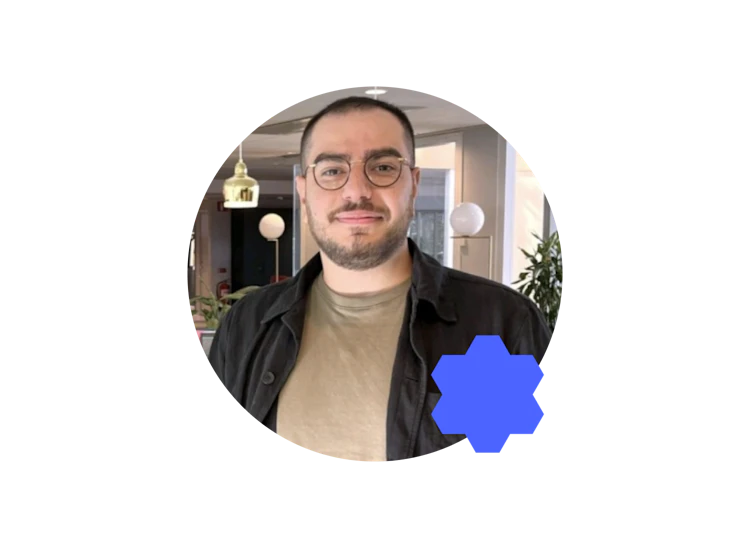
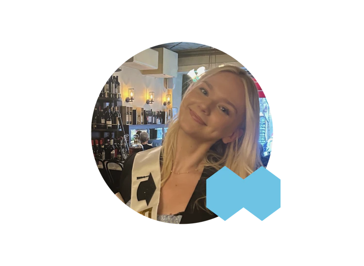
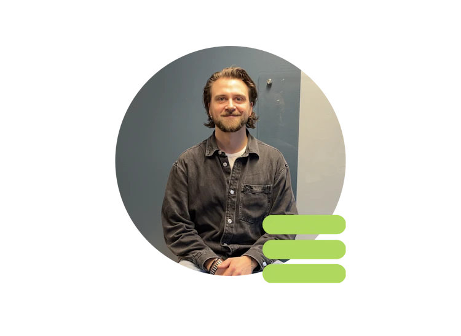

Chas Academy - One step closer to a career in IT
Chas Academy is a vocational college that prepares you for a working life in IT. Do you want to join the journey to the world's best industry?
What do our alumni say?

INSPIRING TIME
"The time at Chas Academy was incredibly inspiring! Being surrounded by like-minded people with the same goals gave me extra motivation to always do my best. Committed school staff, knowledgeable teachers and a wide variety of stimulating and fun study moments made the experience great! Today I work as a UX designer at Afa insurance and enjoy my career choice and workplace very much."
MAHER HEZAM

LIA THAT LEADS TO JOB
"I have always been interested in IT but had no experience before I started studying at Chas. During the training, we learned everything from structuring work to reading code, which provided good knowledge for future jobs. Today I work as a DevOps Engineer at Solidify where I also completed both my LIA and my degree project."
MELINA ASPLUND

FROM STUDENT TO TEACHER
"I chose this education to have a more flexible everyday life, I have worked in restaurants my whole life and wanted to do something that is as creative as cooking. I got hooked on programming and wanted to know everything, so I chose Fullstack. Today I am back at Chas but as a trainer this time, which is so fun! I get the opportunity to spread the knowledge that I learned right here, which feels really good."
LUDVIG FLYCKT